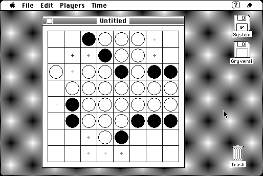

Download
gryversi-1.0.1c.zip (48K) a zipped hfs disk image. The disk image can be mounted with Mini vMac.
copyright: Paul C. Pratt
mod date: Sep 27, 2006
license: GPL
Gryversi is a simple game of Reversi, otherwise known as Othello(TM), that I wrote a long time ago (formerly called ReversiMac, first public release in 1990). The only advantage over “Booby Reversi” is that it is easier to beat, and that the source code is included, under the GNU General Public License (GPL).

It is intended to become an example of how to program for the Macintosh Plus. However, the source needs to be cleaned up more. Some oddities come from its long history, such as the translation from Pascal to C, and that though I've used it as a test case for various development tools over the years, I've never spent much time on it at any one time. I've cleaned it up a bit for the 1.0.0 release, but more is needed. Anyway, the program seems to run fine.
Gryversi should run on any 680x0 or PowerPC Macintosh. OS X for Intel Macintosh doesn't include the Classic environment, but it will run there or on any other computer within Mini vMac. (I've no intention of porting it to the Carbon API, or even recompiling for native PowerPC.)
This version of Gryversi hasn't been tested as extensively as Mini vMac. So it is safer to run it within Mini vMac than directly on a real Macintosh.
The included documentation is a Hypercard stack (from before the web existed). This can be viewed with the “Hypercard Player”, still available from Apple.
If you find Gryversi useful, please consider helping the Gryphel Project, of which it is a part.
Here is the md5 checksum for the download, signed with Gryphel Key 5:
--------- GRY SIGNED TEXT --------- e9baccabcb96a8f8a7f8cbd43f7b2e1d gryversi-1.0.1c.zip ------- BEGIN GRY SIGNATURE ------- Gry/4Xa8CFcUzxdN/AVZoNq+rd5hLAwTa5JCvzVUEQ3Z06cJ6TXhstp1JRF3GPw/ xe/ciEiDXsUVVG/22Hyy5zo0uo9eHjXt6yvd7Rx6kH8JjUEHhSQZlCQ+KT7DBArR o3TIh3jU70qSh7zGvoFtzlKWlG8+CRFCV8kDdaY3gsbTvE6dJPFlU8DKBkDVYDFa -------- END GRY SIGNATURE --------
You can redistribute Gryversi and/or modify it under the terms of version 2 of the GNU General Public License as published by the Free Software Foundation. See the included file COPYING.
Gryversi is distributed in the hope that it will be useful, but WITHOUT ANY WARRANTY; without even the implied warranty of MERCHANTABILITY or FITNESS FOR A PARTICULAR PURPOSE. See the license for more details.
News:
September 28, 2006 Gryversi will now work on a Macintosh 512. It can also work on a Macintosh 128, but may not always gracefully handle running out of memory. The source code is cleaned up a little bit more, but there is still far to go.